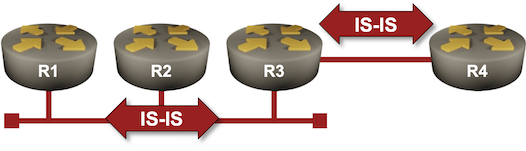

Running IS-IS Over Unnumbered Interfaces
IS-IS does not use IPv4 or IPv6 to exchange routing information. It uses a dedicated layer-3 protocol (it has its own 802.1 Service Access Point – SAP) and transports IPv4/IPv6 information only in various TLVs inside the LSPs.
Running IS-IS over point-to-point or multi-access unnumbered interfaces should be a no-brainer, but do all IS-IS implementations support that? You can test that in this lab exercise, which contains a point-to-point link between two routers and a LAN segment.

Device Requirements
Use any device supported by the netlab IS-IS configuration module. It’s best if the device supports unnumbered IPv4 interfaces.
Starting the Lab
You can start the lab on your own lab infrastructure or in GitHub Codespaces (more details):
- Change directory to
basic/7-unnumbered - Execute netlab up. You’ll get a lab with IPv4, IPv6, and IS-IS routing configured on all lab devices.
- Log into your device (RTR) with netlab connect rtr
Explore the IS-IS Data Structures
Before changing anything, explore the IS-IS data structures routers generate using regular IPv4/IPv6 interface addresses. Their LSPs contain the LAN/P2P prefix and the interface IPv4/IPv6 addresses:
R3 LSP displayed by R1 running Arista EOS
r1#show isis database level-2 r3.00-00 detail
Legend:
H - hostname conflict
U - node unreachable
IS-IS Instance: Gandalf VRF: default
IS-IS Level 2 Link State Database
LSPID Seq Num Cksum Life Length IS Received LSPID Flags
r3.00-00 3 35505 1192 246 L2 0000.0000.0003.00-00 <>
Remaining lifetime received: 1199 s Modified to: 1200 s
NLPID: 0xCC(IPv4) 0x8E(IPv6)
Hostname: r3
Area addresses: 49.0001
Topology: 2 (IPv6)
Topology: 0 (IPv4)
Interface address: 10.1.0.1
Interface address: 172.16.0.3
Interface address: 10.0.0.3
Interface address: 2001:db8:20::1
Interface address: 2001:db8:21::3
Interface address: 2001:db8:cafe:3::1
IS Neighbor : r3.7e Metric: 10
IS Neighbor : 0000.0000.0004.00 Metric: 10
IS Neighbor (MT-IPv6): r3.7e Metric: 10
IS Neighbor (MT-IPv6): 0000.0000.0004.00 Metric: 10
Reachability : 10.1.0.0/30 Metric: 10 Type: 1 Up
Reachability : 172.16.0.0/24 Metric: 10 Type: 1 Up
Reachability : 10.0.0.3/32 Metric: 10 Type: 1 Up
Reachability (MT-IPv6): 2001:db8:20::/64 Metric: 10 Type: 1 Up
Reachability (MT-IPv6): 2001:db8:21::/64 Metric: 10 Type: 1 Up
Reachability (MT-IPv6): 2001:db8:cafe:3::/64 Metric: 10 Type: 1 Up
Router Capabilities: Router Id: 10.0.0.3 Flags: []
Area leader priority: 250 algorithm: 0
The IPv4 and IPv6 interface addresses are also advertised in IS-IS hello messages:
Details of R3 IS-IS neighbor displayed by R1 running Arista EOS
r1#show isis neighbors level-2 detail
Instance VRF System Id Type Interface SNPA State Hold time Circuit Id
...
Gandalf default r3 L2 Ethernet1 52:dc:ca:fe:3:1 UP 7 r3.7e
Area addresses: 49.0001
SNPA: 52:dc:ca:fe:3:1
Router ID: 0.0.0.0
Advertised Hold Time: 9
State Changed: 00:02:10 ago at 2025-03-12 13:54:02
LAN Priority: 64
IPv4 Interface Address: 172.16.0.3
IPv6 Interface Address: fe80::50dc:caff:fefe:301
Interface name: Ethernet1
Graceful Restart: Supported
Supported Address Families: IPv4, IPv6
Neighbor Supported Address Families: IPv4, IPv6
Building the IP Routing Table
Calculating the prefixes that go into the IP routing tables and the next-hop routers is the primary job of the IS-IS SPF algorithm (we covered a few details in the Explore IS-IS Data Structures lab exercise). In this lab exercise, we’ll focus on the next hops of those prefixes.
For example, R1 finds three prefixes that go through R3 (the loopback addresses of R3 and R4 and their point-to-point link). Combining that with the IPv4/IPv6 interface address advertised by R3 in the IS-IS hello messages (see above), it installs the following routes in the IPv4 and IPv6 routing tables:
IPv4 routes using R3 as the next hop (displayed by R1 running Arista EOS)
r1#show ip route isis next-hop 172.16.0.3
...
I L2 10.0.0.3/32 [115/20]
via 172.16.0.3, Ethernet1
I L2 10.0.0.4/32 [115/30]
via 172.16.0.3, Ethernet1
I L2 10.1.0.0/30 [115/20]
via 172.16.0.3, Ethernet1
IPv6 routes using R3 as the next hop (displayed by R1 running Arista EOS)
r1#show ipv6 route isis
...
I L2 2001:db8:20::/64 [115/20]
via fe80::50dc:caff:fefe:301, Ethernet1
I L2 2001:db8:cafe:3::/64 [115/20]
via fe80::50dc:caff:fefe:301, Ethernet1
I L2 2001:db8:cafe:4::/64 [115/30]
via fe80::50dc:caff:fefe:301, Ethernet1
Tip
The IS-IS IPv6 routes use IPv6 LLA as the next-hop IPv6 address.
Migrating to Unnumbered Interfaces
Replace IPv4/IPv6 addresses on all Ethernet interfaces of all routers in your lab with unnumbered IPv4 addresses and link-local-only IPv6.
The commands you have to use might be similar to no ip address followed by ip address unnumbered loopback 0 and no ipv6 address followed by ipv6 enable.
Tip
FRRouting allows you to configure the same IP address on multiple interfaces. After removing the original Ethernet IPv4 address, use the regular ip address command with the loopback IPv4 address. It also needs no ipv6 enable command; IPv6 is enabled with the sysctl commands, and removing an IPv6 address from an interface does not disable it.
Does It Still Work?
Connect to R3 and explore its IS-IS neighbors. R3 should still have working adjacencies with all other routers in your lab.
IS-IS neighbors observed on R3 running Arista EOS
r3#show isis neighbors
Instance VRF System Id Type Interface SNPA State Hold time Circuit Id
Gandalf default r1 L2 Ethernet1 52:dc:ca:fe:1:1 UP 24 r3.7e
Gandalf default r2 L2 Ethernet1 52:dc:ca:fe:2:1 UP 26 r3.7e
Gandalf default r4 L2 Ethernet2 P2P UP 24 80
Warning
Some devices can run IS-IS over unnumbered point-to-point IPv4 links but not over unnumbered multi-access IPv4 links. Such a device might refuse to form adjacencies over the LAN or might not install some IPv4 routes in the IP routing table.
Next, connect to R1 and explore its IPv4 and IPv6 routing tables. Do they contain the same routes for the loopback interfaces as before? What are the next hops?
The IPv4 results might surprise you a bit. For example, Arista EOS claims that the loopback addresses of R2 and R3 are directly connected:
The IPv4 routing table on R1 running Arista EOS
r1#show ip route isis
...
I L2 10.0.0.2/32
directly connected, Ethernet1
I L2 10.0.0.3/32
directly connected, Ethernet1
I L2 10.0.0.4/32 [115/30]
via 10.0.0.3, Ethernet1
Technically, that’s not incorrect, as R2 and R3 reuse their loopback IPv4 addresses for the Ethernet interfaces.
The IPv6 routing table should contain no such surprises and should be mostly identical to the one you’ve seen before (apart from no longer having the transit subnets):
The IPv6 routing table on R1 running Arista EOS
r1#show ipv6 route isis
...
I L2 2001:db8:cafe:2::/64 [115/20]
via fe80::50dc:caff:fefe:201, Ethernet1
I L2 2001:db8:cafe:3::/64 [115/20]
via fe80::50dc:caff:fefe:301, Ethernet1
I L2 2001:db8:cafe:4::/64 [115/30]
via fe80::50dc:caff:fefe:301, Ethernet1
How Does This Work?
The IPv6 results shouldn’t be surprising. The IS-IS hello messages contain the neighbor’s IPv6 LLA, which is used as the next-hop address in the IPv6 routing table.
A similar process is going on in the IPv4 world. The IS-IS hello messages sent by R3 advertise its loopback address (10.0.0.3) as its IPv4 address on the LAN:
The IPv4 address of R3 observed by R1 running Arista EOS
r1#show isis neighbors level-2 detail
Instance VRF System Id Type Interface SNPA State Hold time Circuit Id
...
Gandalf default r3 L2 Ethernet1 52:dc:ca:fe:3:1 UP 9 r3.7e
Area addresses: 49.0001
SNPA: 52:dc:ca:fe:3:1
Router ID: 0.0.0.0
Advertised Hold Time: 9
State Changed: 00:10:24 ago at 2025-03-12 14:06:32
LAN Priority: 64
IPv4 Interface Address: 10.0.0.3
IPv6 Interface Address: fe80::50dc:caff:fefe:301
Interface name: Ethernet1
Graceful Restart: Supported
Supported Address Families: IPv4, IPv6
Neighbor Supported Address Families: IPv4, IPv6
The loopback IPv4 address (10.0.0.3) is thus used as the next hop for all routes going through R3. Most routers also add the outgoing interface to the routes in their routing tables. R1 thus knows that it has to (A) send packets to 10.0.0.3 and (B) use the Ethernet1 interface to reach 10.0.0.3 if it wants to send packets to 10.0.0.4:
The details of the IPv4 route for 10.0.0.4/32 on R1 running Arista EOS
r1#show ip route 10.0.0.4/32 detail
...
I L2 10.0.0.4/32 [115/30] PM
via 10.0.0.3, Ethernet1 r1 -> [r2,r3]
But how does R1 know what MAC address to use to reach R3? It uses ARP, sending an ARP request on Ethernet1 asking who has the IP address 10.0.0.3. Not surprisingly, we can see the results in its ARP table:
The ARP table on R1 contains the MAC addresses of all connected routers
r1#show arp
Address Age (sec) Hardware Addr Interface
10.0.0.2 0:13:44 52dc.cafe.0201 Ethernet1
10.0.0.3 0:13:44 52dc.cafe.0301 Ethernet1
Want to have even more details? Read the blog posts in the Unnumbered IPv4 Interfaces series.
Reference Information
Lab Wiring
Point-to-Point Links
| Origin Device | Origin Port | Destination Device | Destination Port |
|---|---|---|---|
| r3 | Ethernet2 | r4 | Ethernet1 |
LAN Links
| Origin Device | Origin Port | Link Name (NET) | Description |
|---|---|---|---|
| r1 | Ethernet1 | LAN | r1 -> [r2,r3] |
| r2 | Ethernet1 | LAN | r2 -> [r1,r3] |
| r3 | Ethernet1 | LAN | r3 -> [r1,r2] |
Note: The interface names depend on the devices you use in the lab. The printout was generated with Arista EOS running on RTR and FRRouting running on X1 and X2.
Lab Addressing
| Node/Interface | IPv4 Address | IPv6 Address | Description |
|---|---|---|---|
| r1 | 10.0.0.1/32 | 2001:db8:cafe:1::1/64 | Loopback |
| Ethernet1 | 172.16.0.1/24 | 2001:db8:21::1/64 | r1 -> [r2,r3] |
| r2 | 10.0.0.2/32 | 2001:db8:cafe:2::1/64 | Loopback |
| Ethernet1 | 172.16.0.2/24 | 2001:db8:21::2/64 | r2 -> [r1,r3] |
| r3 | 10.0.0.3/32 | 2001:db8:cafe:3::1/64 | Loopback |
| Ethernet1 | 172.16.0.3/24 | 2001:db8:21::3/64 | r3 -> [r1,r2] |
| Ethernet2 | 10.1.0.1/30 | 2001:db8:20::1/64 | r3 -> r4 |
| r4 | 10.0.0.4/32 | 2001:db8:cafe:4::1/64 | Loopback |
| Ethernet1 | 10.1.0.2/30 | 2001:db8:20::2/64 | r4 -> r3 |